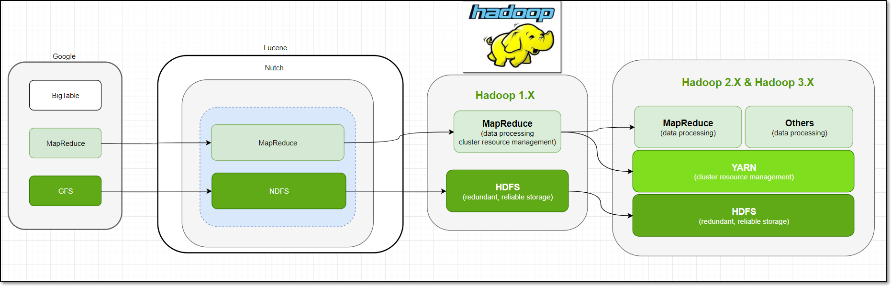
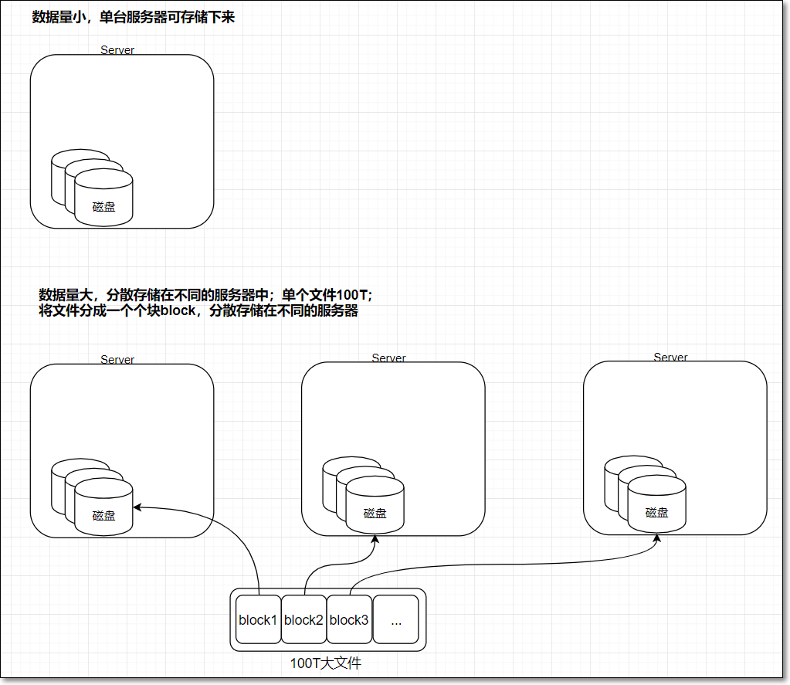

大数据概论
概念： 大数据（big data）是指无法在一定时间范围内用常规软件工具进行捕捉、管理和处理的数据集合，是需要新处理模式才能具有更强的决策力、洞察发现力和流程优化能力的海量、高增长率和多样化的信息资产
| 数据单位 | B | KB | MB | GB | PE | PB | EB | ZB | YB |
|---|---|---|---|---|---|---|---|---|---|
| 基数 | 2 | 2 | 2 | 2 | 2 | 2 | 10 | 10 | |
| 次方 | 0 | 10 | 20 | 30 | 40 | 50 | 60 | 21 | 24 |
一、大数据特性
- 数据量大（Volume）
- 类型繁多（Variety）
- 价值密度低（Value）
- 速度快时效高（Velocity）
二、大数据的挑战
- 存储： 每天几TB、GB的数据增量，并且还在持续的增长中。
- 分析： 如何从巨大的数据中挖掘出隐藏的商业价值。
- 管理： 如何快速构建并且保证系统的安全、简单可用。
三、传统的大数据项目流程
st=>start: 开始
dataCollect=>operation: 数据收集 ： Flume、Kafaka、Scribe
dataStore=>operation: 数据存储 ： HDFS、HBase、Cassadra
dataCaculate=>operation: 数据计算 : Mapreduce、Strom、Impala、Spark、Spark Streaming...
数据计算三大类：
1、离线处理平台： Spark、Spark Core
2、交互式处理平台： Spark SQL、Hive 、Impala
3、流处理平台 ： Strom、Spring Stoeaming 、 Flink
dataAnalyse=>operation: 分析与挖掘 ： Mahour、R语言、Hive、Pig
dataEtl=>operation: ETL ： sqoop、DataX
dataView=>operation: 可视化 ： Echarts.js 、 E3.js、 数据报表系统
dataActual=>operation: 项目实战
e=>end: 结束
st->dataCollect->dataStore->dataCaculate->dataAnalyse->dataEtl->dataView->dataActual->e
分布式文件系统
一、Hadoop简介
Hadoop架构

Hadoop历史

二、HDFS
- HDFS是Hadoop中的一个存储子模块
- HDFS (全称Hadoop Distributed File System)，即hadoop的分布式文件系统
- File System文件系统：操作系统中负责管理和存储文件信息的软件；具体地说，它负责为用户创建文件，存入、读出、修改、转储、删除文件等
- 当数据集大小超出一台计算机的存储能力时，就有必要将它拆分成若干部分，然后分散到不同的计算机中存储。管理网络中跨多台计算机存储的文件系统称之为分布式文件系统（distributed filesystem）
2.1 HDFS特点
2.1.1 优点：
- 适合存储大文件，能用来存储管理PB级的数据；不适合存储小文件
- 处理非结构化数据
- 流式的访问数据，一次写入、多次读写
- 运行于廉价的商用机器集群上，成本低
- 高容错：故障时能继续运行且不让用户察觉到明显的中断
- 可扩展

2.1.2 局限性
- 不适合处理低延迟数据访问
- HDFS是为了处理大型数据集分析任务的，主要是为达到高的数据吞吐量而设计的
- 对于低延时的访问需求，HBase是更好的选择
- 无法高效存储大量的小文件
- 小文件会给Hadoop的扩展性和性能带来严重问题
- 利用SequenceFile、MapFile等方式归档小文件
- 不支持多用户写入及任意修改文件
- 文件有一个写入者，只能执行追加操作
- 不支持多个用户对同一文件的写操作，以及在文件任意位置进行修改
2.2 HDFS常用命令
HDFS两种命令风格，两种命令效果等同
hadoop fs / hdfs dfs

如何查看hdfs或hadoop子命令的帮助信息，如ls子命令
hdfs dfs -help ls hadoop fs -help ls #两个命令等价查看hdfs文件系统中已经存在的文件。对比linux命令ls
hdfs dfs -ls / hadoop fs -ls /在hdfs文件系统中创建文件
hdfs dfs -touchz /edits.txt向HDFS文件中追加内容
hadoop fs -appendToFile edit1.xml /edits.txt #将本地磁盘当前目录的edit1.xml内容追加到HDFS根目录 的edits.txt文件查看HDFS文件内容
hdfs dfs -cat /edits.txt从本地路径上传文件至HDFS
#用法：hdfs dfs -put /本地路径 /hdfs路径 hdfs dfs -put hadoop-2.7.3.tar.gz / hdfs dfs -copyFromLocal hadoop-2.7.3.tar.gz / #根put作用一样 hdfs dfs -moveFromLocal hadoop-2.7.3.tar.gz / #根put作用一样，只不过，源文件被拷贝成功后，会被删除在hdfs文件系统中下载文件
hdfs dfs -get /hdfs路径 /本地路径 hdfs dfs -copyToLocal /hdfs路径 /本地路径 #根get作用一样在hdfs文件系统中创建目录
hdfs dfs -mkdir /shell在hdfs文件系统中删除文件
hdfs dfs -rm /edits.txt hdfs dfs -rm -r /shell在hdfs文件系统中修改文件名称（也可以用来移动文件到目录）
hdfs dfs -mv /xcall.sh /call.sh hdfs dfs -mv /call.sh /shell在hdfs中拷贝文件到目录
hdfs dfs -cp /xrsync.sh /shell递归删除目录
hdfs dfs -rmr /shell列出本地文件的内容（默认是hdfs文件系统）
hdfs dfs -ls file:///home/bruce/查找文件
# linux find命令 find . -name 'edit*' # HDFS find命令 hadoop fs -find / -name part-r-00000 # 在HDFS根目录中，查找part-r-00000文件
还有许多其他命令，大家可以自己探索一下
2.2.1 命令行小结
输入hadoop fs 或hdfs dfs，回车，查看所有的HDFS命令
许多命令与linux命令有很大的相似性，学会举一反三
- 有用的help，如查看ls命令的使用说明：hadoop fs -help ls
2.2.2 hdfs与getconf结合使用
获取NameNode的节点名称（可能有多个）
hdfs getconf -namenodes获取hdfs最小块信息
hdfs getconf -confKey dfs.namenode.fs-limits.min-block-size查找hdfs的NameNode的RPC地址
hdfs getconf -nnRpcAddresses
2.2.3 hdfs与dfsadmin结合使用
同样要学会借助帮助信息
hdfs dfsadmin -help safemode查看hdfs dfsadmin的帮助信息
hdfs dfsadmin查看当前的模式
hdfs dfsadmin -safemode get进入安全模式
hdfs dfsadmin -safemode enter
2.2.4 hdfs与fsck结合使用
fsck指令显示HDFS块信息
hdfs fsck /02-041-0029.mp4 -files -blocks -locations # 查看文件02-041-0029.mp4的块信息
2.2.5 其他命令
检查压缩库本地安装情况
hadoop checknative格式化名称节点（慎用，一般只在初次搭建集群，使用一次；格式化成功后，不要再使用）
hadoop namenode -format执行自定义jar包
hadoop jar YinzhengjieMapReduce-1.0-SNAPSHOT.jar com.kaikeba.hadoop.WordCount /world.txt /out
2.3 HDFS编程
1.向hdfs中,上传一个文本文件
/** * 上传文件到服务器 * 传递参数 * args[0] 本地文件路径 * args[1] hdoop文件系统 路径 */ public static void uploadFileToFileSystem(String source,String targetUrl){ System.out.println("文件地址：" + source); System.out.println("目标服务器：" + targetUrl); InputStream inputStreamSourceFile = null; try { // 获取文件输入流 inputStreamSourceFile = new BufferedInputStream(new FileInputStream(source)); // HDFS 读写配置文件 Configuration configuration = new Configuration(); // 通过url 返回文件系统实例 FileSystem fileSystem = FileSystem.get(URI.create(targetUrl),configuration); //调用Filesystem的create方法返回的是FSDataOutputStream对象 //该对象不允许在文件中定位，因为HDFS只允许一个已打开的文件顺序写入或追加 // 获取文件系用的输出流 OutputStream outputStreamTarget = fileSystem.create(new Path(targetUrl)); // 将文件输入流，写入输入流 IOUtils.copyBytes(inputStreamSourceFile,outputStreamTarget,4069,true); System.out.println("上传成功"); } catch (FileNotFoundException e) { System.err.println(e.getMessage()); } catch (IOException e) { e.printStackTrace(); } }2.读取hdfs上的文件
/**
* 从文件系统中读取文件
* @param source 需要读取的文件
* @return 读取文件内容
*/
public static String readFileFromFileSystem(String source){
String result = null;
try {
// HDFS 读写文件配置
Configuration configuration = new Configuration();
// HDFS文件系统
FileSystem fileSystem = FileSystem.get(URI.create(source),configuration);
// 文件输入流，用于读取文件
InputStream inputStream = fileSystem.open(new Path(source));
BufferedReader bufferedReader = new BufferedReader(new InputStreamReader(inputStream));
result = readBufferReader(bufferedReader).toString();
} catch (IOException e) {
e.printStackTrace();
}
return result;
}
/**
* 获取内容
* @param br
* @return
*/
private static StringBuffer readBufferReader(BufferedReader br) throws IOException {
StringBuffer stringBuffer = new StringBuffer();
String temp = "";
while ((temp = br.readLine()) != null){
stringBuffer.append(temp);
}
return stringBuffer;
}
- 3.列出某一个文件夹下的所有文件
/**
* 列出当前目录下所有字文件名称
* @param source
* @return
*/
public static String listAllFileChildren(String source){
StringBuffer stringBuffer = new StringBuffer();
try {
// HDFS 读写文件配置
Configuration configuration = new Configuration();
// HDFS文件系统
FileSystem fileSystem = FileSystem.get(URI.create(source),configuration);
// recursive 继续深入遍历
RemoteIterator<LocatedFileStatus> iterator = fileSystem.listFiles(new Path(source),true);
while (iterator.hasNext()){
LocatedFileStatus fileStatus = iterator.next();
stringBuffer.append(fileStatus.getPath() + "\n");
}
} catch (IOException e) {
e.printStackTrace();
}
return stringBuffer.toString();
}
4.列出多级目录名称和目录下的文件名称
`java/** * 递归列出当前目录下所有目录和文件名称 * @param source * @return */ public static String listAllChildren(String source){ StringBuffer stringBuffer = new StringBuffer(); try { // HDFS 读写文件配置 Configuration configuration = new Configuration(); // HDFS文件系统 FileSystem fileSystem = FileSystem.get(URI.create(source),configuration); list(stringBuffer,fileSystem,new Path(source)); } catch (IOException e) { e.printStackTrace(); } return stringBuffer.toString(); } /** * 递归目录和文件 * @param stringBuffer 文件目录名称集合 * @param fileSystem hdfs 文件系统 * @param source path 路径 * @throws IOException */ private static void list(StringBuffer stringBuffer,FileSystem fileSystem, Path source) throws IOException { FileStatus[] iterator = fileSystem.listStatus(source); for (FileStatus status:iterator) { stringBuffer.append(status.getPath() + "\n"); if(status.isDirectory()){ list(stringBuffer,fileSystem,status.getPath()); } } }
#### 2.4 HDFS架构

- 大多数分布式框架都是主从架构
- HDFS也是主从架构Master|Slave或称为管理节点|工作节点
##### 1、NameNode
**1.1 文件系统**
- file system文件系统：操作系统中负责管理和存储文件信息的软件；具体地说，它负责为用户创建文件，存入、读取、修改、转储、删除文件等
- 读文件 =>>找到文件 =>> 在哪 + 叫啥？
- 元数据
- 关于文件或目录的描述信息，如文件所在路径、文件名称、文件类型等等，这些信息称为文件的元数据metadata
- 命名空间
- 文件系统中，为了便于管理存储介质上的，给每个目录、目录中的文件、子目录都起了名字，这样形成的层级结构，称之为命名空间
- 同一个目录中，不能有同名的文件或目录
- 这样通过目录+文件名称的方式能够唯一的定位一个文件

**5.1.2 HDFS-NameNode**
- HDFS本质上也是文件系统filesystem，所以它也有元数据metadata；
- 元数据metadata保存在NameNode**内存**中
- NameNode作用
- HDFS的主节点，负责管理文件系统的命名空间，将HDFS的元数据存储在NameNode节点的内存中
- 负责响应客户端对文件的读写请求
- HDFS元数据
- 文件目录树、所有的文件（目录）名称、文件属性（生成时间、副本、权限）、每个文件的块列表、每个block块所在的datanode列表

- 每个文件、目录、block占用大概**150Byte字节的元数据**；所以HDFS适合存储大文件，不适合存储小文件
- HDFS元数据信息以两种形式保存：①编辑日志**edits log**②命名空间镜像文件**fsimage**
- edits log：HDFS编辑日志文件 ，保存客户端对HDFS的所有更改记录，如增、删、重命名文件（目录），这些操作会修改HDFS目录树；NameNode会在编辑日志edit日志中记录下来；
- fsimage：HDFS元数据镜像文件 ，即将namenode内存中的数据落入磁盘生成的文件；保存了文件系统目录树信息以及文件、块、datanode的映射关系，如下图

> 说明：
>
> ①为hdfs-site.xml中属性dfs.namenode.edits.dir的值决定；用于namenode保存edits.log文件
>
> ②为hdfs-site.xml中属性dfs.namenode.name.dir的值决定；用于namenode保存fsimage文件
##### 2、DataNode
- DataNode数据节点的作用
- 存储block以及block元数据到datanode本地磁盘；此处的元数据包括数据块的长度、块数据的校验和、时间戳
##### 3 SeconddaryNameNode
- 为什么引入SecondaryNameNode
- 为什么元数据存储在NameNode在内存中？
- 这样做有什么问题？如何解决？
- HDFS编辑日志文件 editlog：在NameNode节点中的编辑日志editlog中，记录下来客户端对HDFS的所有更改的记录，如增、删、重命名文件（目录）；
- 作用：一旦系统出故障，可以从editlog进行恢复；
- 但editlog日志大小会随着时间变在越来越大，导致系统重启根据日志恢复的时候会越来越长；
- 为了避免这种情况，引入**检查点机制checkpoint**，命名空间镜像fsimage就是HDFS元数据的持久性检查点，即将内存中的元数据落磁盘生成的文件；
- 此时，namenode如果重启，可以将磁盘中的fsimage文件读入内容，将元数据恢复到某一个检查点，然后再执行检查点之后记录的编辑日志，最后完全恢复元数据。
- 但是依然，随着时间的推移，editlog记录的日志会变多，那么当namenode重启，恢复元数据过程中，会花越来越长的时间执行editlog中的每一个日志；而在namenode元数据恢复期间，HDFS不可用。
- 为了解决此问题，引入secondarynamenode辅助namenode，用来合并fsimage及editlog

- SecondaryNameNode定期做checkpoint检查点操作
- 创建检查点checkpoint的两大条件：
- SecondaryNameNode每隔1小时创建一个检查点
- 另外，Secondary NameNode每1分钟检查一次，从上一检查点开始，edits日志文件中是否已包括100万个事务，如果是，也会创建检查点
- Secondary NameNode首先请求原NameNode进行edits的滚动，这样新的编辑操作就能够进入新的文件中
- Secondary NameNode通过HTTP GET方式读取原NameNode中的fsimage及edits
- Secondary NameNode读取fsimage到内存中，然后执行edits中的每个操作，并创建一个新的统一的fsimage文件
- Secondary NameNode通过HTTP PUT方式将新的fsimage发送到原NameNode
- 原NameNode用新的fsimage替换旧的fsimage，同时系统会更新fsimage文件到记录检查点的时间。
- 这个过程结束后，NameNode就有了最新的fsimage文件和更小的edits文件
- SecondaryNameNode一般部署在另外一台节点上
- 因为它需要占用大量的CPU时间
- 并需要与namenode一样多的内存，来执行合并操作
- 如何查看edits日志文件
```shell
hdfs oev -i edits_0000000000000000256-0000000000000000363 -o /home/hadoop/edit1.xml
如何查看fsimage文件
hdfs oiv -p XML -i fsimage_0000000000000092691 -o fsimage.xmlcheckpoint相关属性
# 3600秒(即1小时) 每隔1小时创建一个检查点 #The number of seconds between two periodic checkpoints dfs.namenode.checkpoint.period = 3600 # edits日志文件中是否已包括100万个事务，如果是，也会创建检查点 # The Secondary NameNode or CheckpointNode will create a checkpoint of the namespace every 'dfs.namenode.checkpoint.txns' transactions, regardless of whether 'dfs.namenode.checkpoint.period' has expired. dfs.namenode.checkpoint.txns = 1000000 # 60(1分钟) SecondaryNameNode每1分钟检查一次 # The SecondaryNameNode and CheckpointNode will poll the NameNode every 'dfs.namenode.checkpoint.check.period' seconds to query the number of uncheckpointed transactions. dfs.namenode.checkpoint.check.period = 60
4 心跳机制

工作原理：
- NameNode启动的时候，会开一个ipc server在那里
- DataNode启动后向NameNode注册，每隔3秒钟向NameNode发送一个“心跳heartbeat”
- 心跳返回结果带有NameNode给该DataNode的命令，如复制块数据到另一DataNode，或删除某个数据块
- 如果超过10分钟NameNode没有收到某个DataNode 的心跳，则认为该DataNode节点不可用
- DataNode周期性（6小时）的向NameNode上报当前DataNode上的块状态报告BlockReport；块状态报告包含了一个该 Datanode上所有数据块的列表
心跳的作用：
通过周期心跳，NameNode可以向DataNode返回指令
可以判断DataNode是否在线
通过BlockReport，NameNode能够知道各DataNode的存储情况，如磁盘利用率、块列表；跟负载均衡有关
hadoop集群刚开始启动时，99.9%的block没有达到最小副本数(dfs.namenode.replication.min默认值为1)，集群处于安全模式，涉及BlockReport；
心跳相关配置
- hdfs-default.xml
- 心跳间隔
| 属性 | 值 | 解释 |
|---|---|---|
| dfs.heartbeat.interval | 3 | Determines datanode heartbeat interval in seconds. |
- block report
| More Actions属性 | 值 | 解释 |
|---|---|---|
| dfs.blockreport.intervalMsec | 21600000 (6小时) | Determines block reporting interval in milliseconds. |
- 查看hdfs-default.xml默认配置文件

5 负载均衡
什么原因会有可能造成不均衡？
- 机器与机器之间磁盘利用率不平衡是HDFS集群非常容易出现的情况
- 尤其是在DataNode节点出现故障或在现有的集群上增添新的DataNode的时候
为什么需要均衡？
- 提升集群存储资源利用率
- 从存储与计算两方面提高集群性能
如何手动负载均衡？
$HADOOP_HOME/sbin/start-balancer.sh -t 5% # 磁盘利用率最高的节点若比最少的节点，大于5%，触发均衡
6 小结
- NameNode负责存储元数据，存在内存中
- DataNode负责存储block块及块的元数据
- SecondaryNameNode主要负责对HDFS元数据做checkpoint操作
- 集群的心跳机制，让集群中各节点形成一个整体；主节点知道从节点的死活
- 节点的上下线，导致存储的不均衡，可以手动触发负载均衡